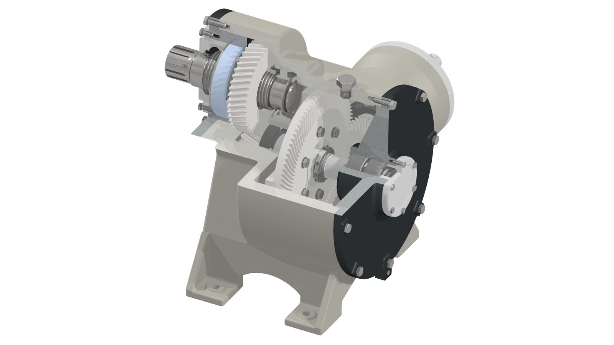

Machine Elements CAD Projects
CAD assignments from mechanical engineering lectures, including larger assemblies such as multi-stage gearboxes. I also created a MATLAB program to calculate bearing loads and bearing lifespan.
GitHub repo planned